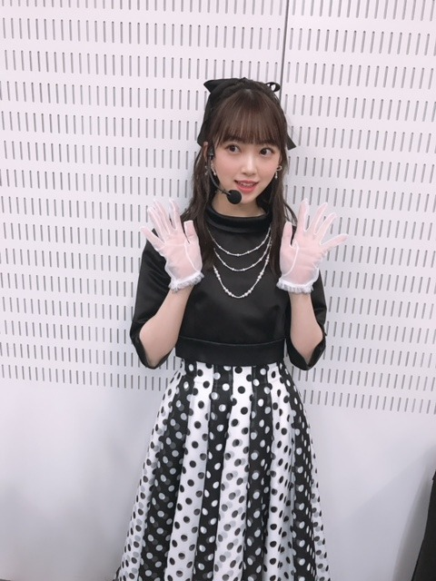
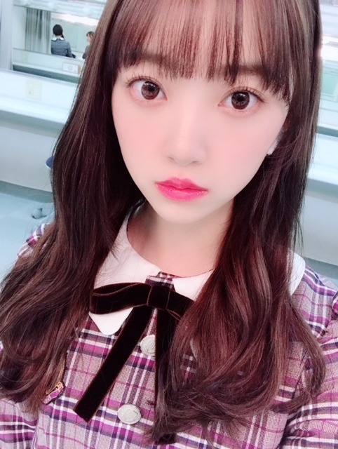

2019/0202Satオードリーヘップバーン
昨日のmステ3時間sp
観てくださった皆さん
ありがとうございました✨
ファンの方や友達、いろんな人が
観ててくれて嬉しかったなぁ
髪型はギリギリまで悩んで、
最初はハーフアップにしてたけど
本番前にポニーテールに変えました！
今回の衣装テーマは
オードリーヘップバーン☺︎
髪型変える前の幻のハーフアップを。



いつかまたこの髪型もやりますね！
横浜で開催されていたオードリーヘップバーン展には行けなかったけどお顔はもちろんファッションやメイク、佇まいも絵になる素敵な女性で画像や映像では拝見していたので嬉しかった〜
私的にヘップバーンを意識したポイントは
キリッとした太めの眉毛
口紅はうるつや赤リップ
前髪は眉毛合わせでまっすぐめにおろす
下まつげにもマスカラ
です！
女性らしくもあるけど
力強さもありドーリー感を出せるように
工夫してみました✨✨
しかし、外寒かったなぁ。笑
でも良き思い出でした！
ライブみたいで楽しかった！
明日は握手会☺︎
皆さんのおすすめの映画、アーティストの曲
教えてくださ〜い
あと、私の好きなところも♡笑
待ってますよ？o(^-^)o笑

では！
インフルエンザ流行ってるので
手洗いうがいマスクは必須です
風邪予防して元気に2月も乗り切りましょう〜
私も気をつける〜
あ！！
握手会で見たい服と髪型教えて^ ^
2019/02/02 15:54


コメント(482)
ハーフアップの髪型がいいなー
後、洋服はチェック柄かなー
お願いしますm(_ _)m
昨日の髪型最高だった！
明日の握手会ヨロシクオネガイシマス
受験失敗して落ち込んでたのですが、未央奈ちゃんを見ると元気が出ます。いつもありがとうございます！
フォレスト・ガンプ
スリービルボード
シングストリート
見てたのあったらごめんなさい！
Mステお疲れ様です！お仕事がんばってください！
昨日のMステ見させて頂きましたよ～！
けっこう前からオードリーのことを言って
いたよね！ もちろん可愛かったよ‼
そしてレコメンも聞いたよ～❗
自分も空手いいな～なんて思ったりして❗
のりさんとのトークもよかったよ～‼
ザンビも見ました❗ 学級委員の堀ちゃん、
雰囲気あってすごくいいなと思いながら
みてました❗
来週も楽しみにしてますよ～！
握手会ではポニーテールが一番かな！
次回の更新で、握手会の髪形教えてね～‼
体調気を付けてお互い過ごしていこうね❗
それではまたね！
とっても寒そうでしたね。また体調崩さないように気をつけて下さいね。
ポニーテール見たいなぁ
昨日のMステ3時間スペシャルお疲れ様でした。
観ました。
可愛いですね。
Mステよかったよー！
早く会いたい！
SUPER BEAVERの「らしさ」と「予感」めっちゃいい曲でオススメです！
ハーフアップも可愛い！
Mステおつかれさま！！
僕はみおなちゃんのすべてが好きやけど特にどこって言ったらおもしろいとこかな。
またコメントするね！
未央奈の好きな所は声と顔と面白い所！！
お勧めのアーティストの曲はback numberのスーパースターになったら と、ソナーポケットのラブレター〜いつだって逢いたくて〜 かな！お勧めの映画はセンセイ君主だよ！
本当に大好きです！！
いつか、握手会とかライブ行ってみたいなぁー…
とりまみおなに会いたい！
明日の握手会お団子ヘアーみたいです！服装は冬っぽいニットとかがいいです！
明日の握手会楽しみにしてます！
インフルエンザ気をつけて！
Mステ最高に可愛かったですよ！
お疲れ様です
今まで違った雰囲気でとても綺麗でした
握手会行けないのは残念ですが頑張ってください
個人的に堀さんのロングスカート好きなんでよかったらよろしくお願いします笑
毎日ヨーグルトとか納豆食べると
なりにくいみたいよ
わたしもライブ楽しみだからきをつける
お仕事がんばってね
昨日のMステ観ました
凄い似合ってました
あと一週間で私学の入試です
頑張って受かるんで3月の大阪全握で会いましょう
お体にお気をつけてください
オススメの曲はMステでも共演してた嵐さんのStill...かなー！
ぜひ聞いてみてね！
昨日のMステめちゃくちゃよかった( ^_^)／
ワイプに写るあなたが可愛くて困りましたよ！
明日握手楽しんでね(｡･ω･｡)
みおちゃんの好きなところ？全部かな！
前の魔女の宅急便みたいに！
透明感がある未央奈を見たいです
おすすめ映画→500日のサマー
恋愛系なんだけど良い意味で期待を裏切られる！！
人によってたぶん感想が大きく変わってくる内容だと思う。
もし観たらどこかで話して欲しい。すごく気になる。
オススメの曲→AAAの「lil infinity」色んな感情がどんどん溢れ
てくる。幸せも、悲しみも。
カラオケとかでも歌いやすい曲調だと思う！
未央奈の好きな所→人のことを思える所。もちろん自分のこと
もだけど特に二期生の皆の事を凄く思って
る所。ファンの事を思って握手会で部ごと
に服だけじゃなくメイクまで変えたりする
ってのはやっぱりその現れだと思う。いつ
もありがとう！
なんかいつもは感謝を伝えたり好きな所を伝えるのって難し
いけど未央奈が聞いてくれたおかげでコメントしやすかっ
た！ありがとう！
インフルエンザには気をつけてね。名古屋での個握、全握。
未央奈との初握手です。今から楽しみです。
あおば。
あと、ファッションについても！
芽衣は中２なんだけど、
クラスですごい未央奈ちゃんかわいいって
話題になってるよ♥
ディズニーコーデについても教えてほしいです
かわいかった！
明日握手会行かないけど、インフルうつされたら大変だから気をつけてね。私はここ3年くらいはなってない。でも、来年中3で受験生だから、気をつけないと。
髪型ポニーテール、私服スナイデルが見たいです
MUSIC STATION ３時間SPの堀さん、目立ってましたよ。
すぐ見つけられました。
ポニーテールとリボン、可愛いかったです、輝いてました。
ヘップバーンさん風衣装も素敵で、よく似合ってました。
シンクロニシティのイメージにぴったりでしたね。
ヘップバーンさんの人を惹きつける魅力には脱帽ですね。
意識したメイクもバッチリかと。
流石の堀さんでした。
握手会には行けませんが、堀さんの好きな所は、沢山あります。
可愛いくて常に向上心を意識し努力家の頑張り屋さん、パフォーマンスは全力投球、芸術好きには親近感が湧きますし、よく笑うし笑い方も好きだし、声も好きです。映画好きなどの感性も刺激になります。
堀さんの全てが好きですから、書き足りません。
体調は大丈夫そうですね、安心しました。
インフルエンザには、気をつけないとですよね。
お互い元気が何よりです。
来週は、春一番が吹くかもとか。
頑張って行きましょう！
昨日のMステの衣装も髪型も、とっても好きでした♡
幻のハーフアップもめちゃめちゃかわいいです。
明日の握手会で未央奈ちゃんにして欲しい髪型は…
三つ編みおなを是非生で見てみたいです！
お願いしますヾ(｡>﹏<｡)ﾉﾞ
あとは昨日のMステの大きいリボンのポニーテール。
未央奈ちゃんのポニーテール、髪の毛がとってもキレイだから、この前の握手会で見とれてしまいました…。
明日どんな未央奈ちゃんに会えるか楽しみにしてます♡
堀
カ
ワ
エ
エ
！
！
！
！
！
！
オススメの曲は、とりあえず SMAPさんの曲は全部、いい曲ばかりなんだけどその中でも「オレンジ」、「はじまりのうた」
「この瞬間、きっと夢じゃない」をオススメします。
もしよかったら、聴いてくれると嬉しいです。
オススメの映画は、今で言ったら「マスカレードホテル」ですかね。絶賛公開中なのでよかったら、見てみてください。
寒い日が続きますが、頑張ってください。応援してます！
Mステの黒リボン、似合ってたーー！
衣装も合わせて、大人っぽくてカッコよかった！
明日の握手会、行きたかったなー
応援してるよ！
相変わらず、とっても可愛かった 〜！
未央奈のハーフアップもポニテもツインも下ろしてるのも全部かわいい！ またいろんな髪型見せてくださいね ！！！
握手会はオードリー春日未央奈とかどうですか？(冗談です)
ホラー洋画的なクールなカッコいい感じの未央奈ちゃんとか見たいです！
ブログ更新ありがとう！
Mステ、ばっちりチェックさせていただきました！
めちゃくちゃ寒そうだったけど、みんなキレッキレのパフォーマンスで最高でしたよ〜
OAでのポニーテールも良かったけど、ハーフアップも良きです！
そろそろボブ未央奈も恋しくなる頃ですね〜
新衣装もとってもお洒落でした！
明日は握手会ですね。
インフルエンザに気をつけて、自分の身体を大事にしてくださいね。
またの更新、待ってます！
衣装も違って、すごく可愛かったです！
自分は、スピッツさんの楓という曲が好きです！
その楓という曲がザンビで、流れてる！ってことを知り
びっくりしました！
ザンビの3話が待ち遠しいです～！
じゃら～んじゃら～ん(*´﹀`*)
Mステの衣装、ものすっっごい素敵でした！
シンクロニシティの振り付けでパァッと開いた時のスカートも見惚れてしまうくらい美しくて、最高のパフォーマンスでした！
乃木坂46、堀さん共々大好きです。
ローマの休日のDVD持ってるー
服はパープルのワンピとか
髪型はチャイナ風のお団子とか
堀ちゃんもインフル気をつけてねー
寒い2月を乗り切ろうー
オススメのアーティストは韓国のSeventeenです！私の推しはバーノンです！
私はまた髪をおろしたやつがみたいです！
堀ちゃんは顔と頭いいぶるところが好き笑笑
コメントする